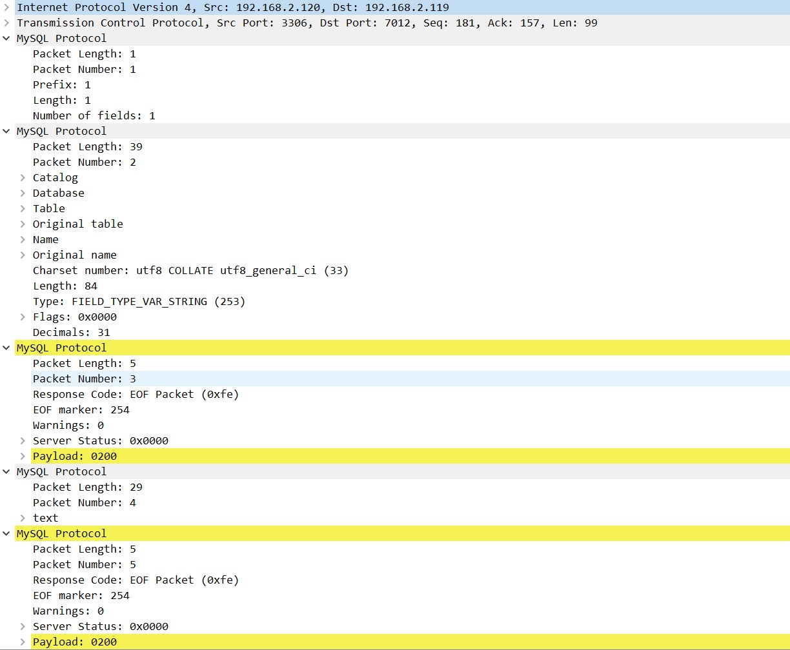

mysql协议
参考文章
Packet {
payload_length (3), // Payload length
sequence_id (1), // 默认是0，包大于16MB需要分包，从0开始增长
payload (..), // Payload
}
Client payload {
type (1), // 0x01关闭连接 0x02切换数据库 0x03查询SQL ...
content (..), // 具体内容
}
Server payload1 { // ok包
header (1),
affected_rows (..), // LengthEncodedInteger类型，1~9字节
last_insert_id (..), // LengthEncodedInteger类型，1~9字节
status_flags (2),
warnings (2),
info (..)
}
Server payload2 { // err包
header (1), // 0xff
error_code (2),
sql_state_marker (1),
sql_state (5),
error_message (..),
}
Server payload3 { // eof包
header (1), // 0xfe
warnings (2),
status_flags (2),
}
Server payload4 { // ResultSet包
ResultSet Header,
Field, // 多个，数据列信息
EOF,
Row Data, // 多个，数据row信息
EOF,
}
网络抓包
// Client payload，发送sql：use godpan;
0c 00 00 00 03 75 73 65 20 67 6f 64 70 61 6e 3b .....use godpan;
// Server payload1
07 00 00 00 00 00 00 02 00 00 00 ...........
// Server payload2
22 00 00 01 ff 19 04 23 34 32 30 30 30 55 6e 6b "......#42000Unk
6e 6f 77 6e 20 64 61 74 61 62 61 73 65 20 27 67 nown database 'g
6f 64 70 61 6e 27 odpan'
// Server payload3
05 00 00 01 fe 00 00 02 00 .........
// Server payload4 见下图
